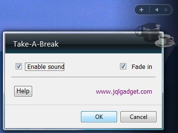

Thank you for downloading JQL Take-A-Break Gadget.
Introduction
Using Take-A-Break
Settings
Frequently Asked Questions (FAQs)
Licence
Version History
When you first install Take-A-Break the gadget is semi-transparent. This is Take-A-Break's normal mode.
Good working practice states that you should take a break at regular intervals. This break doesn't have to be very long, between about a minute and five minutes is typical depending upon your occupation and how often you take a break.
The sorts of things you should do during these short breaks are:
Quite often we become totally engrossed in what we are doing that we forget to take that break so Take-A-Break will remind you to take a break.
Read on to see how to use and customise Take-A-Break.
Take-A-Break is extremely easy to use. Just add it to your Windows Vista Sidebar, if required alter the settings and that's it! You can even run multiple Take-A-Break gadgets simultaneously each with their own settings.
When it is time to take a break the gadget will become opaque, play a sound and a message will be displayed. You can switch off the transparency and sound if you wish.
While loaded into your Sidebar, Take-A-Break will start counting from the time you turn on or log into your computer until you switch it off and will remind you to take those all important breaks.

Enable sound
When ticked, Take-A-Break will play the sound specified by the sound file
setting. If the sound file cannot be played, Take-A-Break will play the default Beep.
When not ticked no sound will be played.
This setting is dependant upon a fully functional sound system on your computer.
Fade In
When ticked the Take-A-Break gadget is displayed semi-transparent until it is
time for a break. During the break the transparency is removed and the gadget is
opaque.
When not ticked the gadget is always displayed opaque (i.e. not transparent).
Help
The Help button displays this help file.
www.jqlgadget.com
Click on the www.jqlgadget.com to go to
the JQLGadget web site (an internet connection is required).
OK
Press the OK button to save the settings.
Note: Pressing OK will also reset the timers for your breaks. This may cause the message and sound to be played when the settings page closes.
Cancel
Press the Cancel button to abandon any changes.
Note: Pressing Cancel will not reset the timers.
Q. Can I run more than one Take-A-Break
gadget at a time?
A. Yes. You can run as many Take-A-Break gadgets as your
computer can handle each with their own settings.
Q. I can't hear a sound when it is time to
take a break.
A. Make sure that:
Q. Will Take-A-Break run on other
operating systems like Windows XP?
A. Take-A-Break, at present, only runs on Windows Vista.
Q. Can I change the any of the other
settings like the messages and timings etc?
A. We hope to have an enhanced Take-A-Break gadget
available shortly. Please check the web site
www.jqlgadget.com for when this will
be available.
Q. Is Take-A-Break available in other
languages?
A. Yes! Take-A-Break is available in English,
French and German though, at present the help file is only available in
English. More translations are planed please check the web
site www.jqlgadget.com for when these
become available.
Q. Do you have any other gadgets?
A. We are currently working on some new gadgets. Please see
the web site www.jqlgadget.com for more
details.
You may give this software away.
You acknowledge that the Software contains trade secrets and other proprietary information of JQL and its licensors. Except to the extent expressly permitted by this Agreement or by the laws of the jurisdiction where you are located, you may not decompile, disassemble or otherwise reverse engineer the Software, or engage in any other activities to obtain underlying information that is not visible to the user in connection with normal use of the Software.
In particular, you agree not for any purpose to display the Software's object code on any computer screen or to make any hard-copy memory dumps of the Software's object code. If you believe you require information related to the interoperability of the Software with other programs, you shall not decompile or disassemble the Software to obtain such information, and you agree to request such information from JQL. Upon receiving such a request, JQL shall determine whether you require such information for a legitimate purpose and, if so, JQL will provide such information to you within a reasonable time and on reasonable conditions.
In any event, you will notify JQL of any information derived from reverse engineering or such other activities, and the results thereof will constitute the confidential information of JQL that may be used only in connection with the Software.
JQL does not warrant that the functions contained in the Software will meet your requirements or that the operation of the Software will be uninterrupted or error-free or free from malicious code. You assume full responsibility for the selection of the Software to achieve your intended results and for the downloading use and results obtained from the Software. You also assume the entire risk as it applies to the quality and performance of the Software. Should the Software prove defective, you (and not JQL or its distributors or dealers) assume the entire cost of all necessary servicing repair, correction and any other costs.
If any provision of this Agreement is deemed invalid or unenforceable by any country or government agency having jurisdiction, that particular provision will be deemed modified to the extent necessary to make the provision valid and enforceable and the remaining provisions will remain in full force and effect.
Version 1.0.0.0
14th February 2007
First release version.
Version 1.0.0.0
2nd March 2007
Fixed a spelling mistake in the French version
French and German translations by:
FC Lavelle and JS Lavelle